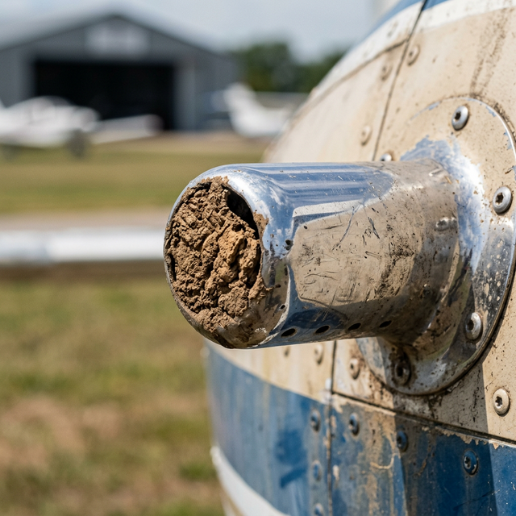

Pitot/static blockage symptoms
Module Objectives
- Analyze the dangerous ASI indication behavior during a climb with a completely blocked pitot tube.
- Describe the simultaneous instrument reactions of a frozen static port.
- Explain the physiological concept behind an alternate static source valve.
Why Does This Matter?

An aircraft departs into heavy clouds with a pitot tube seamlessly packed solid by a mud dauber wasp nest while it sat on the ramp. As the aircraft physically climbs, the trapped ram pressure remains totally constant inside the tubing. However, the outside static pressure is drastically dropping due to altitude. The Airspeed Indicator (ASI) calculates speed by subtracting static from pitot. Because the static is shrinking, the mathematical gap between the two pressures widens massively. The ASI registers a massive increase in airspeed. The pilot, trusting the instrument, aggressively pulls the throttle back to slow the plane. The actual airspeed collapses, and the aircraft violently stalls and spins. Recognizing blockage symptoms is a survival imperative.
What You Need To Know
Scenario 1: Blocked Pitot Tube (Ram Air Trapped)
If a pitot tube is entirely blocked (by ice, mud, or a forgotten synthetic cover), the ASI is the only instrument affected. The altimeter and VSI remain perfectly healthy.
- During a Climb: The trapped pitot pressure stays high. Static pressure mathematically drops. The differential artificially grows. The ASI wildly reads a falsely high and continuously increasing airspeed.
- During a Descent: The trapped pitot pressure stays constant. Static pressure violently rises. The differential violently shrinks. The ASI wildly reads a falsely low and decreasing airspeed, eventually hitting zero.
- The Analogy: A blocked pitot tube fundamentally transforms the ASI into a crude altimeter — the airspeed needle will go up when you climb, and go down when you descend, making it lethally deceptive.
Scenario 2: Blocked Static Port (Ambient Pressure Trapped)
If the static ports ice over or get painted shut, the trapped ambient pressure locks the baseline for all three instruments.
- Altimeter: Completely freezes in place at the exact altitude where the blockage occurred.
- VSI: Returns to zero and refuses to move, regardless of actual climb or descent rates.
- ASI: Registers incorrectly because its reference line is locked. If you climb above the blockage altitude, the ASI will read falsely low (because the trapped static pressure acts like you are still low and dense).
The Solution: Alternate Static Source
If the primary external static ports ice over in heavy weather, the pilot can physically actuate the Alternate Static Source valve.
- This mechanically vents the static plumbing lines directly into the unpressurized aircraft cabin.
- Because the fast-moving air outside the aircraft slightly sucks air out of the cabin vents (Venturi effect), the cabin pressure is marginally lower than actual true ambient pressure.
- The Result: The altimeter will falsely pop up slightly (showing you higher than you are), and the ASI will show a slightly faster airspeed. This minor, predictable error is infinitely preferable to locked, frozen instruments.
System Visualization
graph TD
A[Pitot Tube packed solid by Mud Bug] --> B[Traps High Ram Pressure in ASI Line]
B --> C{Aircraft Climbs to 5,000 ft}
C --> D[Static Pressure Plummets with altitude]
D --> E[Trapped Pitot stays high, mathematical gap widens drastically]
E --> F[ASI incorrectly indicates 250 Knots while actually flying 100 Knots]
F --> G[Pilot reduces thrust to 'slow down']
G -.-> H[Aircraft fatally stalls and departs controlled flight]
style F fill:#991b1b,stroke:#7f1d1d,stroke-width:2px,color:#fff
style H fill:#7f1d1d,stroke:#450a0a,stroke-width:2px,color:#fff
On The Job
Before touching any static plumbing after a reported instrument anomaly, meticulously perform a heavy visual inspection of the tiny static port holes on the fuselage sides. Often, an overzealous wash crew gets wax inside the microscopic holes, or a mechanic physically tapes over the ports during painting and forgets to peel the tape off. If an aircraft exhibits all three symptoms simultaneously (frozen altimeter, dead VSI, reversed ASI behavior), absolutely do not start removing gyros or displays—the fault is a 100% pneumatic static obstruction.
Reference Terms
Effect of Blocked Pitot Tube
A completely blocked pitot tube removes ram air pressure input to the airspeed indicator; the ASI is the primary instrument affected because it requires the differential between ram pressure and static pressure to compute airspeed.
Blocked Pitot During Descent
During descent with a blocked pitot tube, static pressure increases while the trapped ram pressure stays constant; the ASI reads the increasing differential as increasing airspeed, showing a falsely high and increasing reading.
Effect of Blocked Static Port
A blocked static port traps pressure at the level where blockage occurred, causing the altimeter to freeze at that altitude and the VSI to read zero, because neither can detect changes in atmospheric pressure.
Blocked Pitot During Climb
During a climb with a blocked pitot tube, static pressure decreases while the trapped ram pressure stays constant; the ASI sees a growing pitot-minus-static differential and reads a falsely increasing airspeed.
Consistently Low ASI Indication
An airspeed indicator that consistently reads below actual airspeed indicates reduced ram air pressure reaching the ASI, which can result from a partial pitot tube blockage or a leak in the pitot pressure plumbing.
VSI Falsely Showing Descent
A VSI showing a constant descent rate in level flight indicates a leak in the static system that allows static pressure to equalize faster than the calibrated orifice; the VSI interprets this as a pressure increase (descent) even when the aircraft is level.
Pitot Blockage
A lethal obstruction geometry where trapped ram pressure mathematically forces the airspeed indicator to act like an altimeter, wildly registering speed increases during climbs.
Static Blockage
An obstruction of ambient pressure delivery that immediately freezes the altimeter, zeros the VSI, and skews the baseline reference of the ASI.
Alternate Static Source
A critical flight deck pneumatic valve allowing pilots to instantly bypass iced-over external static ports by venting the instruments into the ambient cabin air pressure.
Differential Widening
The core mechanism causing false airspeed climbs; achieved when the static subtrahend drops while the pitot minuend remains artificially trapped.
Assessment Check
A blocked pitot tube lethally commands the ASI to read falsely high in climbs and falsely low in descents; a blocked static port entirely freezes the altimeter and zeros the VSI — always cross-check instruments. --- ---